Бежецк
Культура
1.Дом купцов Андреевых
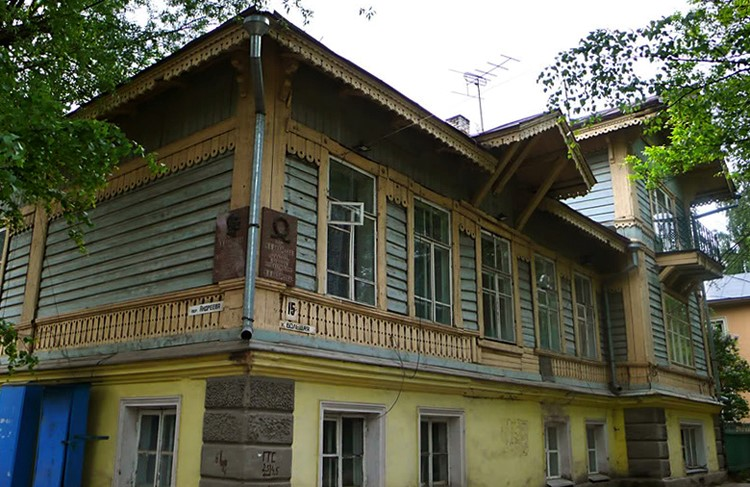
Владельцами этого старинного особняка в девятнадцатом веке были купец первой гильдии Василий Андреев и его супруга Софья, которая имела дворянское происхождение, а ее предки были представителями знатного рода. Их сын Василий, который был единственным ребенком в семье, тоже стал купцом первой гильдии. Кроме этого, он был попечителем главной больницы Бежецка. Сам дом построен из бревен, а полуподвальное помещение сложено из кирпича. Это двухэтажное здание с большим балконом со стороны улицы. Фасад дома великолепно декорирован, а его фризы украшает изысканная резьба. Дом имеет историческую и архитектурную ценность.
2.Дом купцов Коровкиных
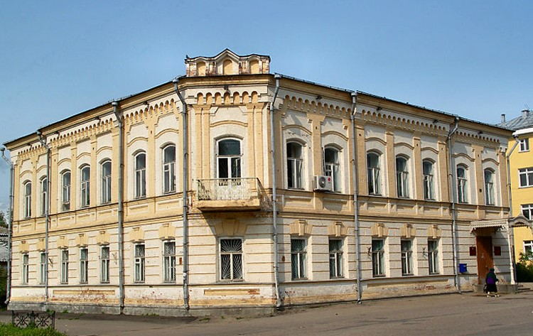
Двухэтажный дом в начале двадцатого века принадлежал купцу Сергею Коровкину и его семье. Он был построен в 1900 году. Коровкины внесли значительный вклад в развитие народного образования, промышленности, торговли, городской системы здравоохранения и хозяйства города. В их владении были промышленные предприятия Бежецка. Сергей Коровкин был в должности главы города и внес большой вклад в его развитие.
3.Дом купцов Неворотиных
Был возведен в первые годы двадцатого века, принадлежал купцам Неворотиным – одним из самых зажиточных жителей Бежецка. По своему архитектурному стилю он близок к московскому раннему модерну. Парадный вход в особняк украшает портик. Крыльцо обрамлено четырьмя колоннами: две прямоугольные колонны и две колонны дорические.
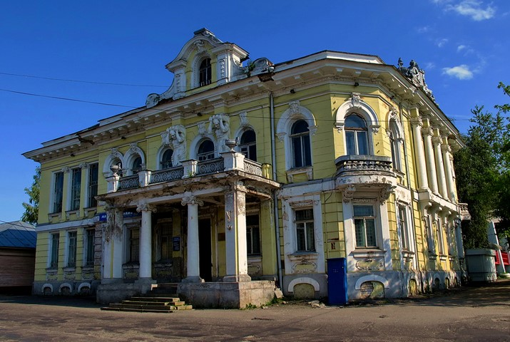
Гранитное крыльцо раньше имело 3 подступа. Над портиком находятся балкон и статуи атлантов, которые не только являются великолепными эстетическими элементами, но и выполняют функцию опор для карниза. Внутри сохранились элементы, украшенные живописью, лепниной и тисненой кожей.
4.Дом нотариуса Тугаринова
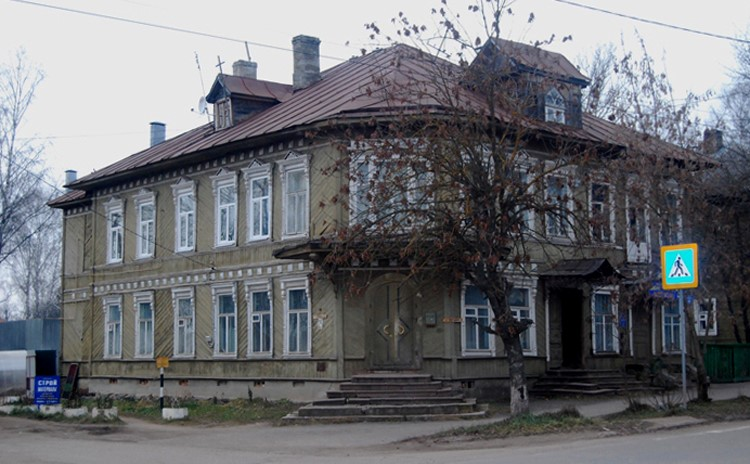
Доходной дом В.И. Тугаринова, построенный в первые годы двадцатого века Это двухэтажный особняк прямоугольной формы со скошенным углом в его юго-восточной части. Над крыльцом видна передняя возвышающаяся часть чердака (слух), напоминающая формой рог носорога. Отсюда его второе название: «Дом-носорог». Чердак венчает сохранившийся шпиль (раньше шпилей было два, второй располагался над балконом). Стены дома имеют обшивку, ориентированную по диагонали. Окна дома украшены резными наличниками. Дверь также обрамлена резьбой. Архитектурное оформление здание сочетает эклектику и модерн.
5.Крестовоздвиженская церковь
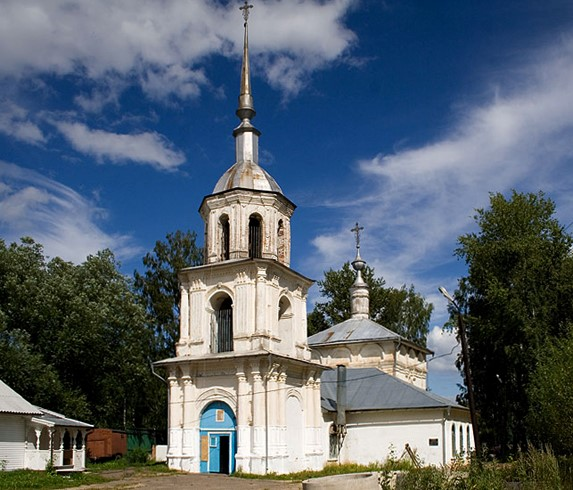
Историки считают, что церковь была возведена в 1670 году на территории Крестовоздвиженского женского монастыря, а строительство каменной колокольни завершилось в 1782 году. Таким образом, это старейшее здание в городе, сохранившееся до наших дней. Храм имеет трехъярусную колокольню в стиле периода раннего барокко. В его внешнем оформлении выделяются внеордерные пилястры и величественные колонны. Во внутреннем убранстве церкви можно увидеть настенную живопись второй половины девятнадцатого века, сохранившуюся в отличном состоянии.
6.Спасо-Преображенская церковь
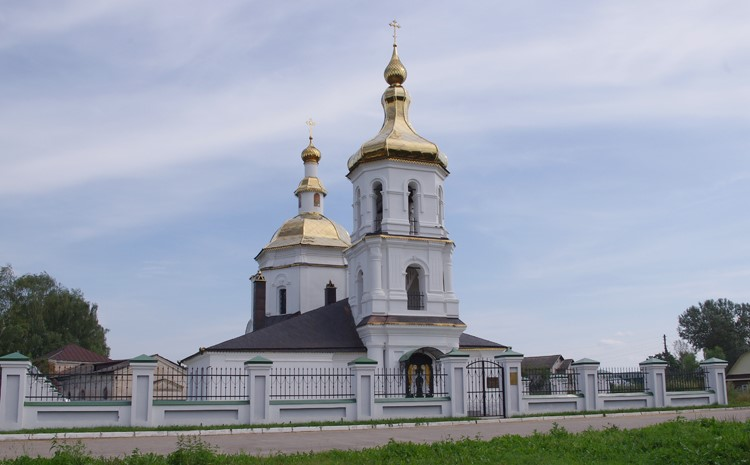
Церковь была возведена в 1772 году на территории упраздненного монастыря. В ее архитектурном облике можно выделить элементы двух стилей: барокко и эклектика. Здесь стоят два храма, обнесенные одной оградой. Основным считается Преображенский храм. Преображенская церковь имеет в некоторой степени нарочито грубоватый вид, а Покровская церковь выделяется строгостью и аскетизмом фасадов.
7.Колокольня Введенского монастыря
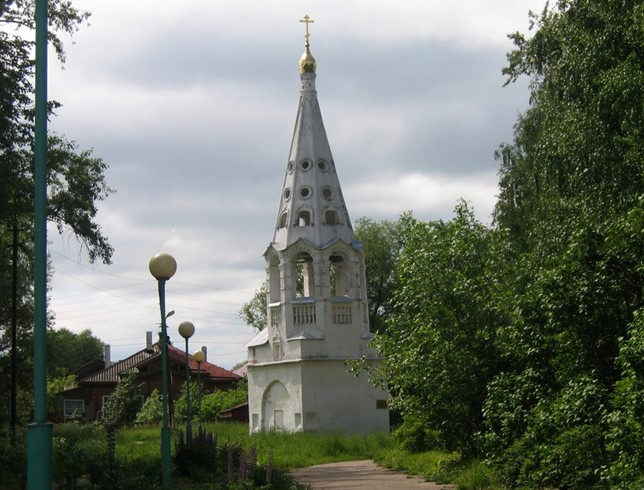
Это единственный сохранившийся элемент старинного монастыря, который был основан в пятнадцатом веке преподобным Нектарием Бежецким. Из дошедших до нас летописей известно, что вдова Ивана Грозного, инокиня Марфа пожертвовала монастырю икону мученика Уара в память о трагически погибшем царевиче Дмитрии, который был ее сыном. Его день рождения приходился на ту же дату, что и день памяти святого. Монастырь существовал до 1764 года, затем на его территории располагался приходской храм. Колокольня, вероятно, была возведена в начале девятнадцатого века. Она состоит из двух ярусов и имеет 3 ряда слухов. На ее верхушке находится чешуйчатая маковица, на которой установлен крест.
8.Музей малины
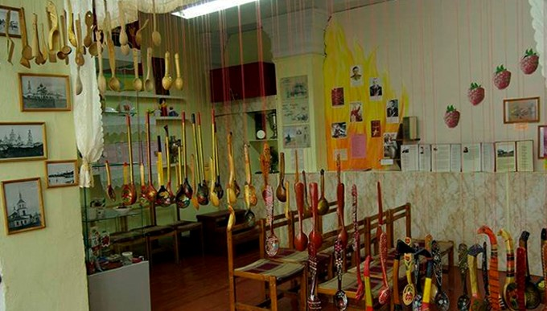
Музей малины открыт в Бежецке совсем недавно. Произошло это в 2010 году. Побывав в этом удивительном музее, можно узнать много интересных и любопытных фактов об этой всеми любимой ягоде, получить полезную информацию о способах выращивания малины и секретах получения ее высокого урожая. Музей малины основан в Бежецке не случайно. На гербе города, утвержденном еще Екатериной Второй, изображен малиновый куст на серебряном поле.
9.Памятник Василию Васильевичу Андрееву
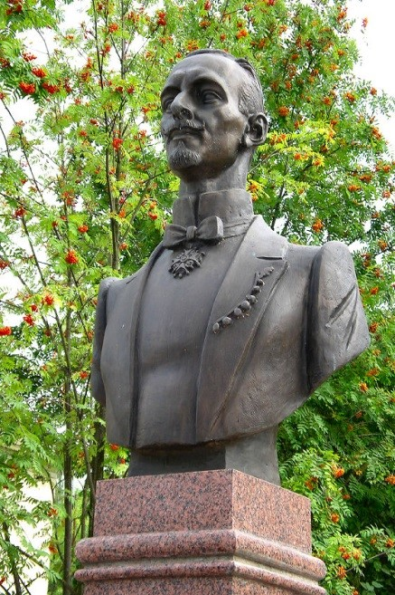
В Бежецке 3 января 1861 года родился Василий Васильевич Андреев - основатель оркестра русских народных инструментов. Здесь прошли его детские годы, сюда он приезжал и впоследствии. Уроженец города Бежецка, он никогда не терял связей с Тверским краем, хотя с 1872 года постоянно жил в Петербурге. Каждое лето он отдыхал в усадьбе, в селе Марьино (в нынешнем Удомельском районе). Там же, в Марьино, он оборудовал для талантливого мастера-самородка Семена Ивановича Налимова мастерскую по изготовлению балалаек и домр. Инструменты Налимова до сих пор являются самыми совершенными. Много раз бывал Василий Васильевич Андреев в Твери и других городах Тверской губернии - один или с оркестром, способствовал организации там кружков и оркестров народных инструментов, был инициатором введения музыкального всеобуча в сельских школах губернии.
10.Памятник балалайке
Памятник этому старинному народному музыкальному инструменту установили в 2011 году. Посвящен памятник В.В. Андрееву – выдающемуся музыканту, уроженцу Бежецка, который прославил балалайку на весь мир. Благодаря ему, балалайка стала одним из неофициальных символов России.
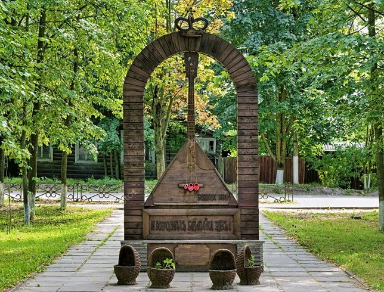
11.Скульптурная композиция «Семья Гумилевых»
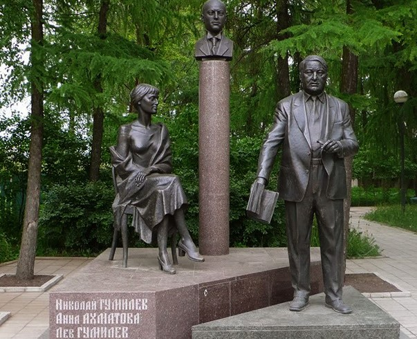
Памятник был открыт в 2003 году. Он состоит из трех скульптур, изготовленных по проекту А. Ковальчука. Они изображают А.А. Ахматову, Л.Н. Гумилева и Н.С. Гумилева. В окрестностях Бежецка находилось имение Гумилевых, где прошли детские и юношеские годы Льва Гумилева. Анна Ахматова и Николай Гумилев также часто приезжали в имение и проводили в нем много времени.
12.Дом, в котором жил Лев Гумилев, бывала А.Ахматова
13.Музейно-литературный центр «Дом поэтов»
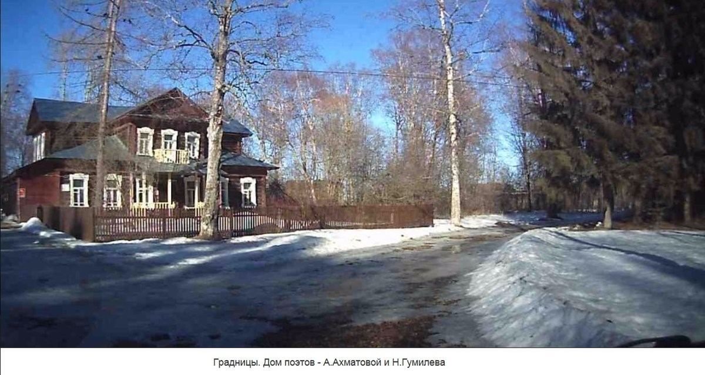
Усадебный дом в деревне Слепнёво Бежецкого уезда Тверской губернии был по¬строен в конце XVIIIв.и принадлежал помещикам Львовым. В конце XIXв. он перешел по наследству от старшего брата контрадмирала Льва Ивановича Львова его сестрам: Bapваре, Агате, Анне. Анна ИвановнаГумилёва была матерью поэта Николая Степановича Гумилёва. Он приезжал в усадьбу с 1908 г., а с 1911 по 1917 гг. сюда каждое лето приезжала его жена Анна Андреевна Ахматова. Здесь были написаны многие стихи, ставшие классическими образцами русской лирики. Со слепнёвским домом связано детство сына поэтов, известного историка Льва Николаевича Гумилёва. В этом доме бывали художник Д.Д. Бушен; поэтесса,художница, общественный деятель, монахиня Е.Ю. Кузьмина-Караваева, известная в Западной Европе как Мать Мария. В 1917 году хозяева оставили усадьбу Слепнёво. А.И.Гумилёва с пятилетним внуком Львом переселилась в Бежецк, где их также навещали Николай Степанович и Анна Андреевна.
14.Подвешенная в 1984 году памятная доска на дубе в Слепневе.
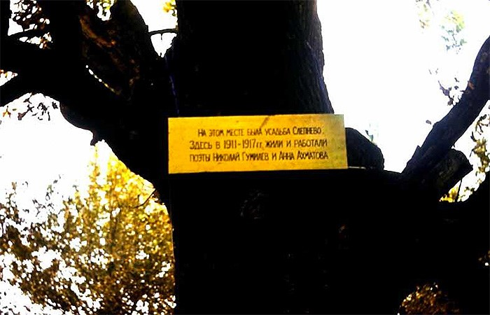
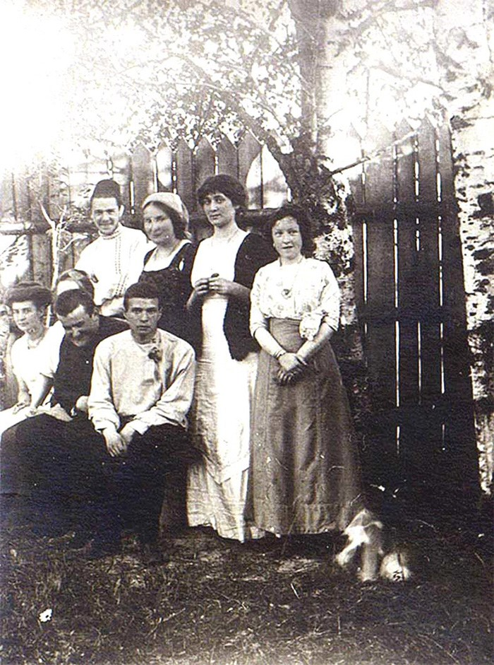
В Слепневе, 1911 год. Стоят: Борис Владимирович Кузьмин-Караваев, Елизавета Юрьевна Кузьмина-Караваева (будущая мать Мария), Анна Ахматова, Мария Леонидовна Сверчкова; сидят: Мария Александровна Кузьмина-Караваева, Екатерина Владимировна Кузьмина-Караваева (?), Дмитрий Юрьевич Пиленко, Дмитрий Дмитриевич Бушен.
15.Село Градницы. Троицкая церковь
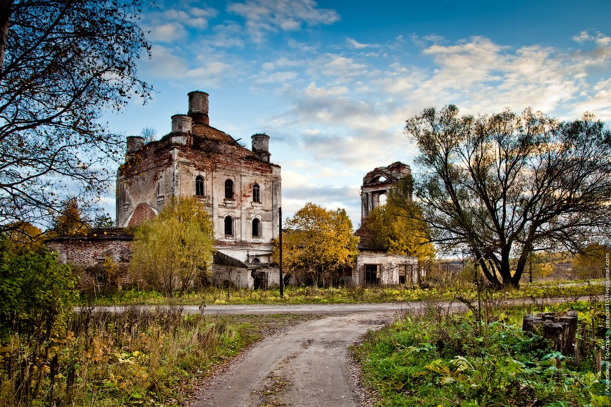
Церковь Троицкая, построена в 1794 году, каменная, престолов три: в холодной Святой Троицы, в теплой: Казанской Божией Матери и Апостолов Петра и Павла.
16.Памятник В.Я. Шишкову.
20 августа 1950 состоялось торжественное открытие памятника В.Я. Шишкову скульптора Иосифа Рабиновича.
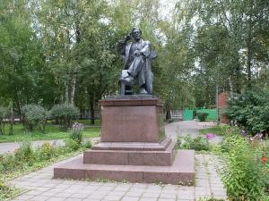
На фасаде дома мемориальная доска: "На этом месте стоял дом, в котором 3 октября 1873 г. родился выдающийся советский писатель Вячеслав Яковлевич Шишков".
17.Обелиск Победы
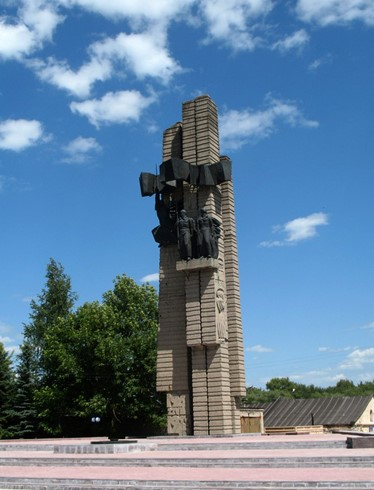
Установлен на Советской площади и посвящен уроженцам Бежецка, погибшим в сражениях на фронтах Великой Отечественной войны. В средней части ступенчатого обелиска находится бронзовая скульптурная композиция, изображающая советских солдат. Перед обелиском горит вечный огонь. Мемориал создавался по проекту скульптора В.С. Новикова и архитекторов В.Г. Шикова и Г.П. Лаврова.
18.Автобус-памятник
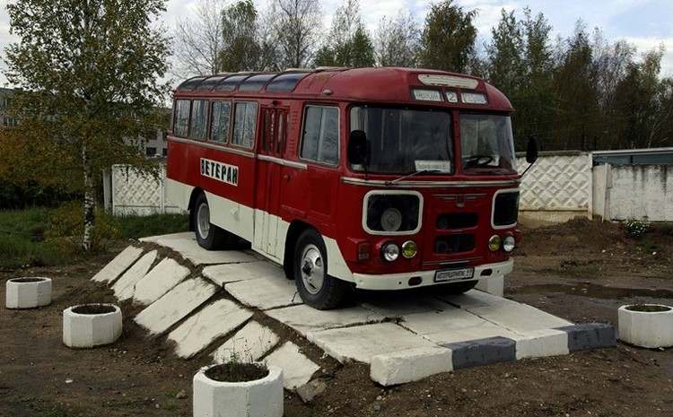
Его можно увидеть около входа в автобусный парк Бежецка. Это старинный автобус, стоящий на своеобразном постаменте из бетонных плит. Внешне автобус находится в отличном состоянии и создается впечатление, что он просто находится на стоянке и в любой момент готов отправиться в рейс.